Reconstructing a century-old world in color by aligning three
separately exposed glass-plate channels—first with exhaustive
search, then with a coarse-to-fine image pyramid.
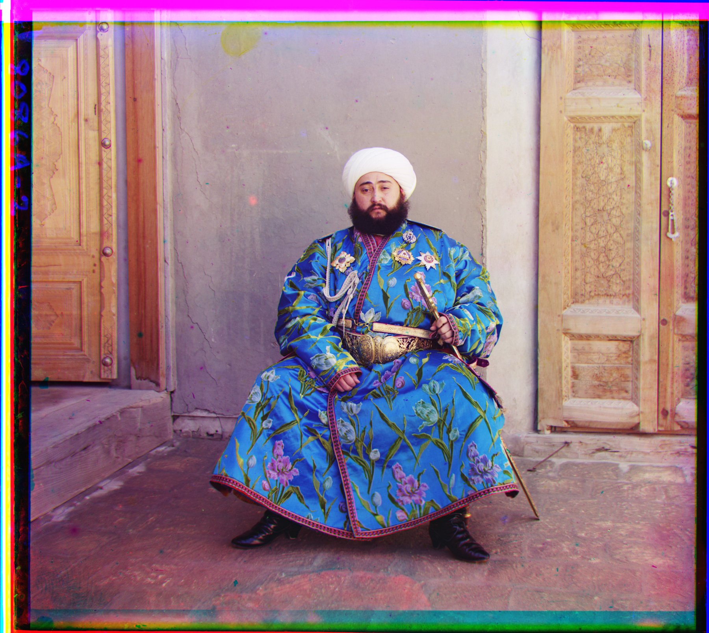
Emir of Bukhara, reconstructed from three monochrome exposures.
This image also exposes the limit of matching raw channel intensities.
Three exposures, one photograph
Sergei Prokudin-Gorskii photographed the Russian Empire through
blue, green, and red filters. The scans preserve those exposures as
three vertically stacked grayscale images. My task was to separate
the channels, estimate their translations, and recombine them into
a convincing RGB image with as few color fringes as possible.
1
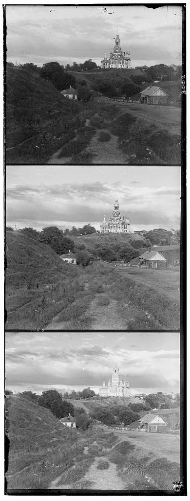
The scanned glass plate: B, G, then R from top to bottom.
2
B
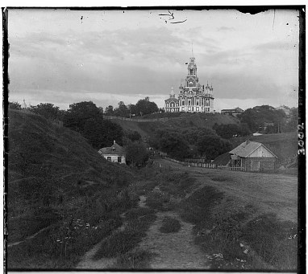
G
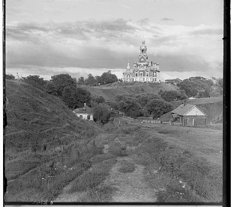
R
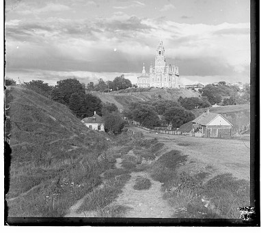
Equal thirds become independent grayscale channels.
3
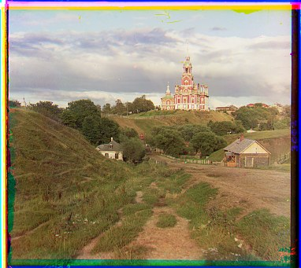
Shift G and R toward B, then stack the channels as RGB.
Every image follows the same data path. The blue exposure is the
fixed reference; green and red are independently translated until
their similarity to blue is maximized. Keeping the reference fixed
also makes every reported displacement directly comparable.
Split and normalizeDivide the plate height into thirds and map pixel values to [0, 1].
Suppress the frameDetect near-black and near-white borders, then score only the central image region.
Search translationsEvaluate candidate (x, y) shifts for G→B and R→B with NCC.
Propagate across scalesFor large scans, double the coarse estimate and refine it within a small local window.
Reconstruct colorApply the winning shifts with np.roll and stack the result as [R, G, B].
Offset convention.
All values below are (x, y): positive x moves a channel
right, and positive y moves it down. Each shift aligns that channel
to the blue reference.
Choosing a similarity metric
I implemented both Euclidean distance (L2) and mean-subtracted
normalized cross-correlation (NCC). On all three low-resolution
images they selected the same shifts. NCC was still the more
principled default because the filter exposures do not share a
common brightness scale.
L2 compares absolute intensity values. My implementation takes
its reciprocal so that, like NCC, a larger score is better.
Exposure or contrast differences raise the distance even when
edges occur at exactly the same locations.
Subtracting the mean removes an additive brightness offset;
dividing by standard deviation removes positive contrast
scaling. NCC therefore measures whether spatial variations rise
and fall together, rather than whether their raw values match.
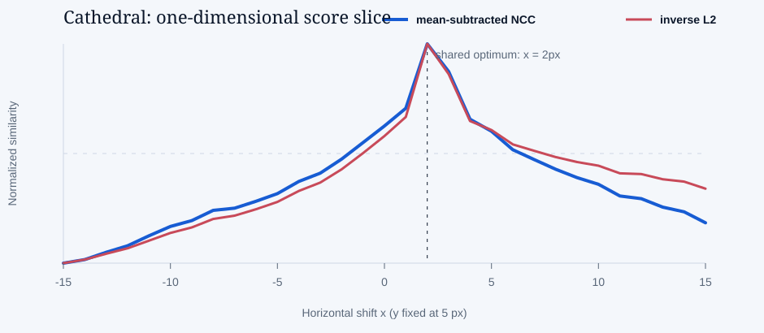
A real one-dimensional slice of the Cathedral search. With y fixed
at 5 px, both metrics peak at x = 2 px; the complete search still
evaluates every x–y pair.
Why the normalization matters
Suppose one exposure is approximately J = aI + b,
where a > 0 represents contrast and b
represents brightness. After mean subtraction and standardization,
NCC is unchanged; L2 is not. This is a useful approximation for
three filtered photographs of the same geometry.
The invariance is not unlimited. Different materials may respond
very differently across wavelengths, highlights can saturate, and
local contrast can weaken or reverse. Those effects explain why
intensity NCC succeeds broadly but fails on Emir—and why structural
edge features help there.
Single-scale search
For the small JPEGs, exhaustive search is affordable. I test every
integer displacement in [-15, 15] × [-15, 15], roll the
candidate channel, score its central half against blue, and retain
the largest NCC value. This is 961 candidates per channel.
best_score = −∞
for x in −15 … 15:
for y in −15 … 15:
candidate = roll(channel, x, y)
score = NCC(center(candidate), center(blue))
keep (x, y) if score is larger
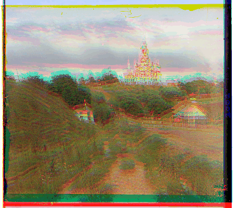
Direct stacking versus the winning alignment. Colored ghosting collapses as the channels register.
Borders are not scene content
My first full-frame search often rewarded agreement between the
glass-plate borders instead of agreement between buildings and
terrain. I mark a pixel as valid when it lies between 0.05 and 0.95,
take the union of the three channel masks, and apply its bounding box
to every channel. The union is conservative: content seen in any one
exposure is preserved.
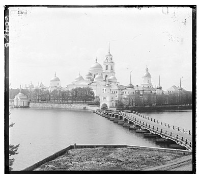
One channel still contains a strong photographic frame.
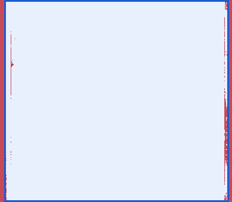
Red is rejected as near-black or near-white; blue marks the shared crop.
Cropping substantially improved Monastery, but cropping alone made
Cathedral worse: remnants of its high-contrast frame still biased
the score. Restricting metric computation to the central half of each
dimension removed that remaining influence without tuning a special
crop for any individual photograph.
A displacement of one pixel at a tiny scale can represent tens or
hundreds of pixels in the original TIFF. I therefore build a
Gaussian pyramid recursively: blur before downsampling by two, solve
the smallest image, double that estimate at the next level, and
search only ±3 pixels around it. Recursion stops once either image
dimension is below 64 pixels.
Fine
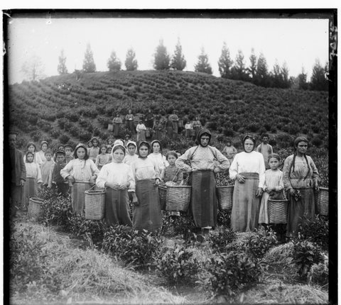
½ scale¼ scaleCoarse
Coarse
Search a small image where each pixel represents a large motion in the source.
Propagate
Multiply the winning displacement by two when returning to the next finer level.
Refine
Search a local ±3 px neighborhood and add the correction to the prediction.
align(level):
if level is coarsest: return search(±3)
coarse_shift = align(downsample(blur(level)))
prediction = 2 × coarse_shift
return prediction + search_around(prediction, ±3)
The same local search code is reused at every level. The pyramid
changes the search strategy—not the similarity objective—and makes
large high-resolution displacements practical.
Complete displacement ledger
The table records the intensity-NCC baseline requested by the
assignment. The three small JPEGs use direct exhaustive search; the
fourteen TIFFs use the pyramid. Sixteen of seventeen baseline results
align cleanly. Emir is the single failure and is corrected in the
extension immediately after the gallery.
Computed displacements relative to the blue channel
Emir is the one baseline failure. His blue robe is bright in the
blue-filter exposure but much darker in the red-filter exposure, so
corresponding pixels violate NCC's approximate affine-brightness
assumption. Raw-intensity NCC sends the red channel upward instead
of matching the face, garment seams, and architecture.
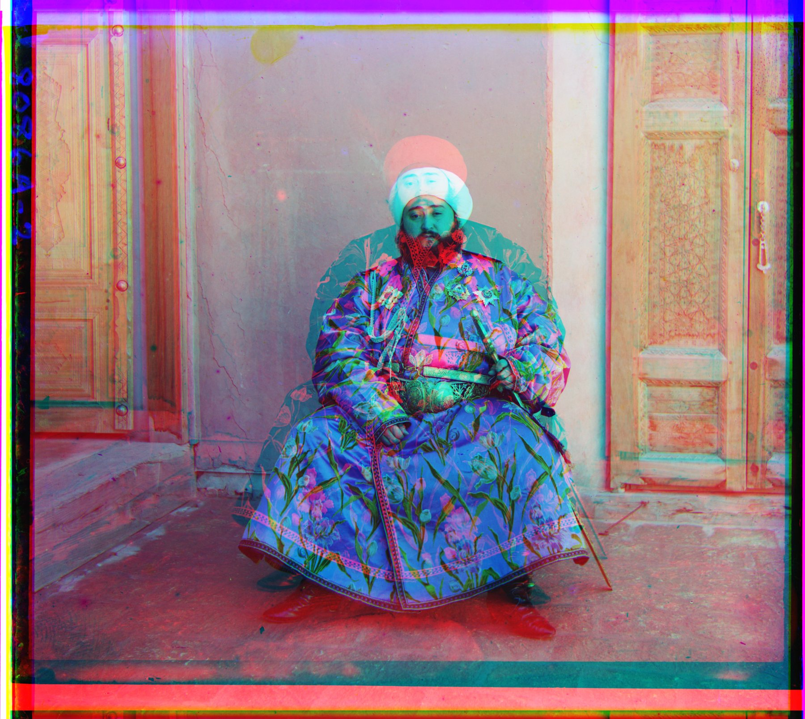
Intensity NCC · G (24, 48) · R (16, −38)Laplacian NCC · G (24, 49) · R (41, 106)
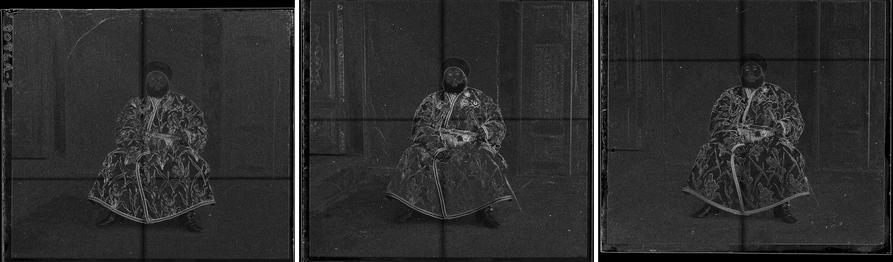
Laplacian magnitudes for B, G, and R, left to right. Color and brightness largely disappear, while the turban, silhouette, garment seams, and door frames remain comparable.
What changed—and what did not
I changed only the representation passed to the same NCC search.
A discrete Laplacian emphasizes rapid spatial variation, so the
score follows shared contours rather than raw color response. The
pyramid, translation model, blue reference, and local search
window remain unchanged.
Beyond the provided set
I downloaded three additional glass plates from the collection to
test whether the same fixed pipeline generalized to different
subjects: a specimen chart with dense repetitive detail, a brick
building with strong edges, and a high-key portrait on a veranda.
All three aligned without image-specific parameter tuning.
Reliable alignment begins with comparing the right evidence.
A small exhaustive search establishes a trustworthy baseline; border
suppression keeps the objective focused on the scene; a Gaussian
pyramid makes large translations efficient; and structural features
rescue the case where channel intensities cease to be comparable.
The remaining colored rims come from the physical plate boundaries
and circular array shifts. A more complete restoration pipeline
could detect a final overlap region after alignment, estimate
channel-specific valid support, and add automatic contrast or white
balance. Those are presentation improvements rather than corrections
to the recovered geometry.